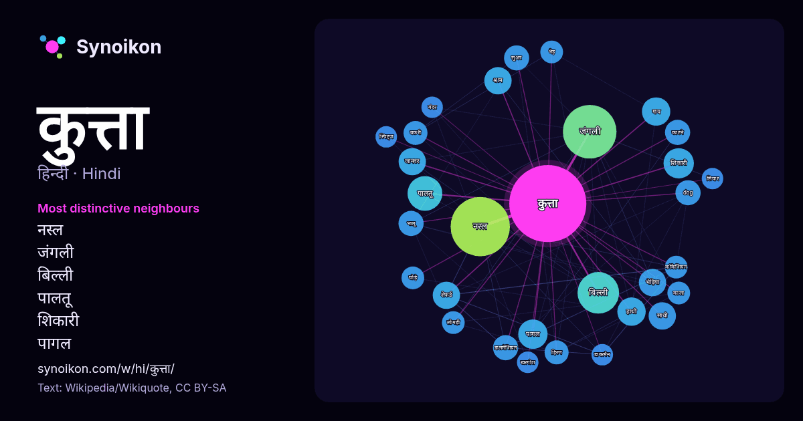

हिन्दी · लोकप्रिय शब्द
कुत्ता
“dog” · विकिपीडिया, Wikiquote के 895 प्रयोगों में इसके आसपास मिले शब्द।

सबसे विशिष्ट पड़ोसी
- नस्ल 55×
- जंगली 42×
- बिल्ली 29×
- पालतू 20×
- शिकारी 16×
- पागल 15×
- श्वान 14×
- भेड़िया 14×
- शेफर्ड 14×
- गाय 13×
- हाथी 13×
- जानवर 12×
- dog 12×
- डालमेशियन 12×
- सुअर 12×
- साथी 11×
- भालू 11×
- काटने 11×
- हिरण 11×
- बकरी 10×
× = सामान्य विकिपीडिया टेक्स्ट की तुलना में कितने गुना अधिक।
सबसे अधिक आने वाले पड़ोसी
- नस्ल 61
- जंगली 50
- बिल्ली 30
- नाम 29
- भारतीय 23
- पालतू 21
- पास 17
- शामिल 17
- वाला 16
- शिकारी 16
- उसका 15
- छोटे 15
- पागल 15
- प्रकार 15
- गाय 14
- हाथी 14
- कारण 13
- जानवर 13
- जिसका 13
- भेड़िया 13
संदर्भ में
- कुत्ता या श्वान(Dogs) भेड़िया कुल की एक प्रजाति है। यह मनुष्य के पालतू पशुओं में से एक महत्त्वपूर्ण प्राणी है। इनके द्वारा तंत्रिका तंत्र को प्रभावित करने Wikipedia snippets · कुत्ता
- किया जाता है; जिसका शाब्दिक अर्थ है "जल कुत्ता") कहा जाता है। इसकी स्थानीय भूमि में इसे अल्गार्वियन समुद्री कुत्ता ("काओ डि अगुआ अल्गार्वियो" (Cão de Água Wikipedia snippets · पुर्तगाली समुद्री कुत्ता
- देसी कुत्ता (अंग्रेज़ी: Desi Dog या South Asian pariah dog) भारत और पाकिस्तान में कुत्तों की सर्वाधिक सामान्य प्रजाति है। यह प्रजाति भारतीय उपमहाद्वीप Wikipedia snippets · देसी कुत्ता
- बहिर्वाह फेफड़े के वाल्व पर बाधित हो जाता है। साथी कुत्ता साथी कुत्ता समूह टॉय समूह मेसोअमेरिका में कुत्ते "Chihuahua Dog History". http://www.chihuahua-rama Wikipedia snippets · चिहुआहुआ (कुत्ता)
- लैब्राडोर, या लैब्राडोर रिट्रीवर , एक प्रकार का शिकारी कुत्ता है। लैब्राडोर कनाडा में सबसे लोकप्रिय नस्लों में से एक है, यूनाइटेड किंगडम और संयुक्त राज्य Wikipedia snippets · लैब्राडोर (कुत्ता)
- अफ़्रीकी जंगली कुत्ता (लाइकाओन पिक्टस), जिसे पेंटेड डॉग या केप हंटिंग डॉग भी कहा जाता है, उप-सहारा अफ्रीका का एक जंगली कैनिड (कुत्ते जैसा मांसाहारी स्तनपायी) Wikipedia snippets · अफ़्रीकी जंगली कुत्ता
- दौरान सैदापेट, चेन्नई में एक कुत्ता प्रजनन इकाई स्थापित की गई थी। यह इकाई मुख्य रूप से राजापलायम कुत्ते, कोम्बाई कुत्ते, कन्नी और चिप्पिपराई जैसी देशी Wikipedia snippets · राजपलायम कुत्ता
- सेंट बर्नार्ड (कुत्ता) (अंग्रेज़ी: St. Bernard (dog)) सेंट बर्नार्ड्स कुत्ते की एक बड़ी नस्ल है जिसकी उत्पत्ति इटली और स्विट्जरलैंड के पश्चिमी आल्प्स Wikipedia snippets · सेंट बर्नार्ड (कुत्ता)
और शब्द
- इतिहास
- ईश्वर
- कार्य
- गर्मी
- गाना
- घंटी
- घड़ी
- घोड़ा
- चाय
- चित्रकला
- छाया
- जंगल
- जलवायु
- जीवन
- तूफ़ान
- दर्पण
- द्वीप
- नक्षत्र
- नमक
- परिवार
- पहाड़
- पानी
- पैसा
- प्रकृति
- बगीचा
- बिल्ली
- भाषा
- भोजन
- माता
- मानचित्र
- मृत्यु
- मौन
- रेगिस्तान
- रेलगाड़ी
- रोटी
- वर्षा
- विज्ञान
- शक्ति
- शरद
- शहद
- शहर
- सड़क
- सत्य
- समय
- सर्दी
- सेतु
- स्वर्ण
- स्वास्थ्य
- हृदय
2026-10-09 को डिफ़ॉल्ट सेटिंग्स (±5 शब्द, मध्यम कॉर्पस) के साथ पहले से गणना की गई। इंटरैक्टिव मानचित्र इसे लाइव डेटा से ताज़ा कर सकता है।
मशीन-अनूदित इंटरफ़ेस; सुधारों का स्वागत है।